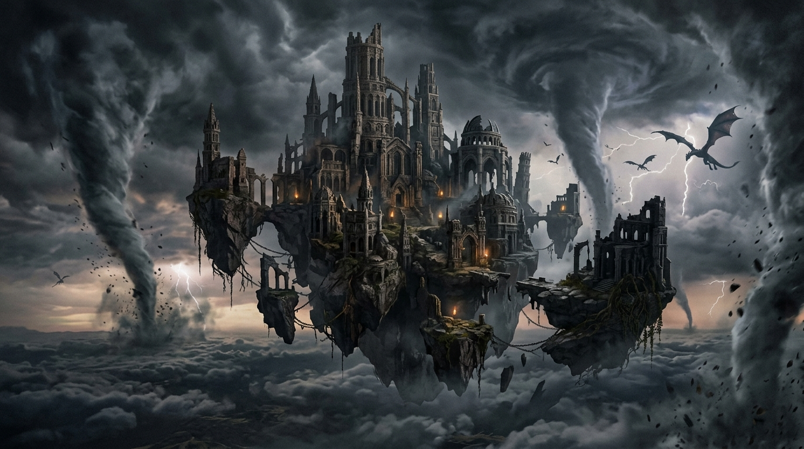

Chapter 5: The Long March of the Tarnished

They departed without trumpets, without flowers thrown upon their path, and without a single hymn sung in their honor.
Down from the royal capital wound the long, somber column of exiles. Thousands of battle-hardened men and women who had bled for the Erdtree marched south through the Weeping Peninsula toward the boundless ocean.
The citizens of the Golden Order watched from behind heavy stone gates in fearful silence. These warriors were no longer revered as liberators. Stripped of the divine golden hue in their gaze, they had become something foreign and despised:
They were the Tarnished.
At the vanguard walked Godfrey, his broken greataxe resting across his broad shoulder. His golden robes had been left behind in Leyndell; he wore only beaten steel and hardened leather, the lion Serosh clinging grimly to his back.
At the southernmost shore, where the cold gray waves crashed against the rocks of the Weeping Peninsula, wooden longships awaited them. Beyond the breakers lay an impenetrable wall of white mist—the fog that separated the divine realm of the Lands Between from the harsh, forgotten worlds outside.
Godfrey turned back one last time to gaze upon the Erdtree. Even from this great distance, the colossal golden tree dominated the northern sky, radiating divine majesty.
A young warrior approached him, tears welling in eyes that no longer reflected the light.
“Lord Godfrey,” the warrior whispered, trembling. “Shall we ever see our homeland again?”
Godfrey placed a massive hand upon the young warrior's shoulder. His gaze was steady, as unyielding as the mountains he had conquered.
“We shall fight in the lands beyond,” Godfrey replied. “We shall die upon unfamiliar earth, and our blood shall feed forgotten soil. But remember the queen's covenant. When the gold fractures, grace will call us home.”
“Upon my name as Godfrey, The First Elden Lord!”
The ships set sail into the mist.
Beyond the fog lay the Badlands—a land of endless strife, where Godfrey would once again cast aside his title, tear the beast from his back, and fight as Hoarah Loux, Warrior.
Centuries would pass. The Golden Order would rot from within, and the Elden Ring itself would shatter into pieces under Marika's own hammer.
And when that fateful hour arrived, a golden thread would pierce the darkness of death once more, guiding the First Elden Lord back across the sea to reclaim his throne.